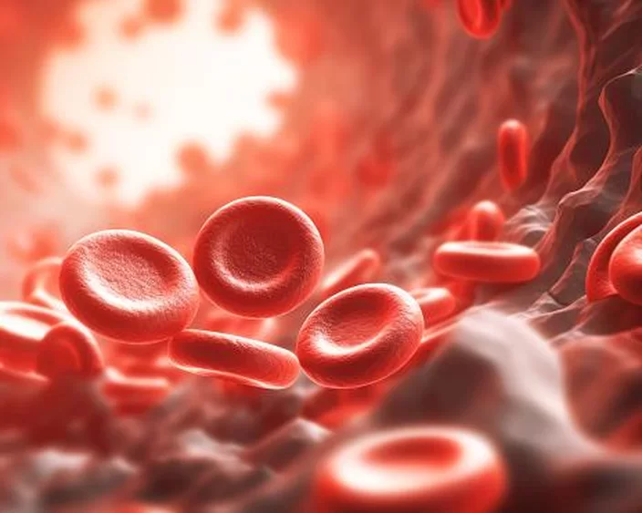

Primeira ‘bateria de sangue’ utiliza hemoglobina para gerar energia, diz estudo
Um novo artigo publicado na revista científica Energy & Fuels sugere que uma equipe de cientistas do Instituto Químico de Energia e Meio Ambiente (IQUEMA), da Universidade de Córdoba (UCO), na Espanha, conseguiu criar a primeira bateria que utiliza 'sangue' para produzir energia.
Ler mais
Tecnologia blockchain pode auxiliar cientistas na compreensão da origem da vida
Uma equipe de químicos conseguiu utilizar a tecnologia blockchain, originalmente desenvolvida para o mercado de criptomoedas, em uma rede de computadores que pode auxiliar cientistas de todo o mundo a investigarem a origem da vida na Terra — ou seja, a tecnologia que popularizou o Bitcoin pode ir muito além do setor financeiro.
Ler mais
O que é uma AGI (Inteligência Artificial Geral)?
A Inteligência Artificial Geral, ou AGI, é um conceito fascinante que permeia as discussões sobre o futuro da inteligência artificial. Embora ainda esteja no campo teórico, a AGI representa a possibilidade de criar uma inteligência artificial com capacidades cognitivas semelhantes ou até superiores às humanas.
Ler mais